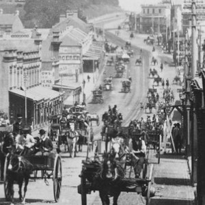
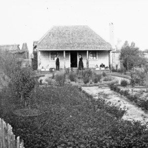
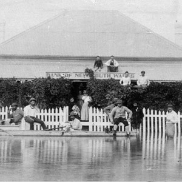
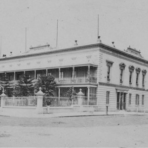

Places
Much of NSW already had names in the local Indigenous languages, so the names that are used in the gazette tell us about the power dynamics of the day. Who or what is the place being named or renamed for or from, and who is it being named by? Is it an Anglicisation of an existing Indigenous name? Is it named for someone in a position of power, either in NSW or in the UK? Does it relate to an earlier event? For example, some aspects of the brutal and racist history of the Colony are written in the names of places such as "Poison Swamp Creek". New places appear, some change name ('Walcha' to 'Brewarrina', 'Kingston' to 'Stanmore'), and some disappear.
Viewing population growth
The places mentioned in the gazette can also be used to (crudely) show the spread and distribution of the population in NSW over that period. As crimes are generally against either people and/or property, crimes tend to occur where people live, so as more towns are established, it's only a matter of time before a crime is committed there (or nearby).
The graph below shows the number and location of towns mentioned in the gazette each year. By moving the slider you can see more and more towns mentioned as the population grows and settles in new areas.
The rate at which locations are mentioned in the gazette, both the named locations such as a specific town, street, hotel, or park, as well as the more generic ones such as 'the bush' or 'a stable', also tell us about the changes that were taking place. For example, the rise and fall of the gold rush towns that sprung up around the goldfields can be seen in the shape of their mentions such as Hill End below, which is typical of the pattern:
Number of Towns Mentioned
Ignoring 1860, (given the data doesn't cover a full year), the number of towns mentioned in 1861 (515) has almost doubled by 1881 (1,025), and this is roughly a similar increase to what was seen in the Colony's population (around 355,000 in 1861 to 760,000 in 1881). After that, the population continues to increase - up to 1.35 million by 1900 - but the period of rapid growth of new towns appears to be over, and the number of places mentioned stays fairly constant.
1860s
1870s
1880s
1890s
The year: 1860
- different towns/locations mentioned
Like many gold rush towns, Araluen's mentions peaked and then fell, after the gold in the area was exhausted. In 1865 the gold escort from Araluen, was held-up by the bushranger Ben Hall.
No longer exists as a Sydney suburb (part of present day Surry Hills) and for a lot of its existence it was largely slums. First crime recorded there was the theft of some dark grey doeskin trousers in August 1860 (value 30 shillings). Future state premier Jack Lang was born there in 1876.
Thought to be derived from the word for 'meeting place' in the local Ngunnawal language, it didn't become Australia's capital until 1911. The name predates that, but it's only mentioned a mere 17 times, the first forthe theft of a saddle (later recovered) in 1865.
Town in the Hunter Valley (now called 'Jerrys Plains'), in an area known today for stud farms, and perhaps that has always been the case, as while the theft of horses generally decreased over time, they continued to be stolen in and around Jerry's Plains, the last mention being in late 1899.
A number of earlier mentions relate to the steamship 'Katoomba', rather than town, and the first theft is of a silver watch from a hut in the area in 1881. The first hotel was built in 1882 (now 'The Carrington') and the town became increasingly popular over the following years. Another grand hotel, 'The Belgravia' (now 'The Hydro Majestic'), was built in 1891 in nearby Medlow Bath (then just called Medlow).
Became increasingly popular after opals were found there in the mid to late 1880s (it's Australia's oldest commercial opal field). First mention in the gazette is for arson in 1894 (and first recorded theft of opals there was later that year...)
NSW place-names and locations largely via geonames.org
View town/location:
1860s
1870s
1880s
1890s
-

Parramatta Road
-

Hill End
-

Walgett
-

Petty's Hotel
The Locations
Select a category to see how they changed over the period (based on the number of times they're mentioned in the gazette by year)
- Peak year
The were
-
public-house
-
hospitals
-
the lunatic asylum
-
Moore Park
-
railway station